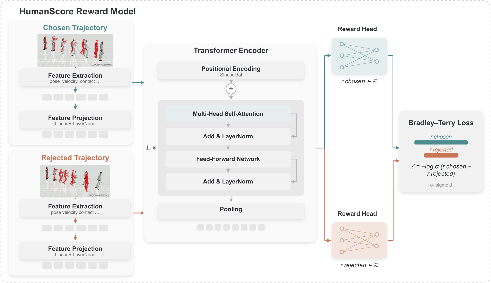
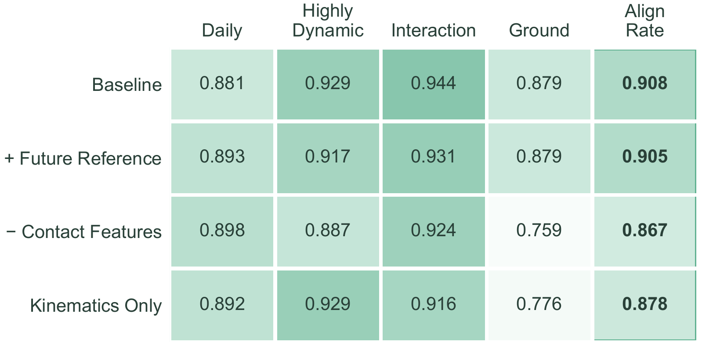
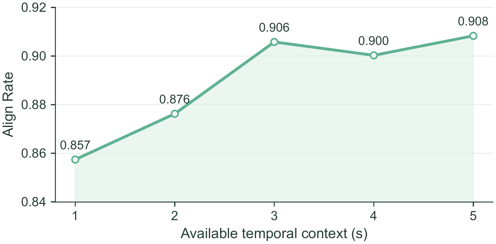
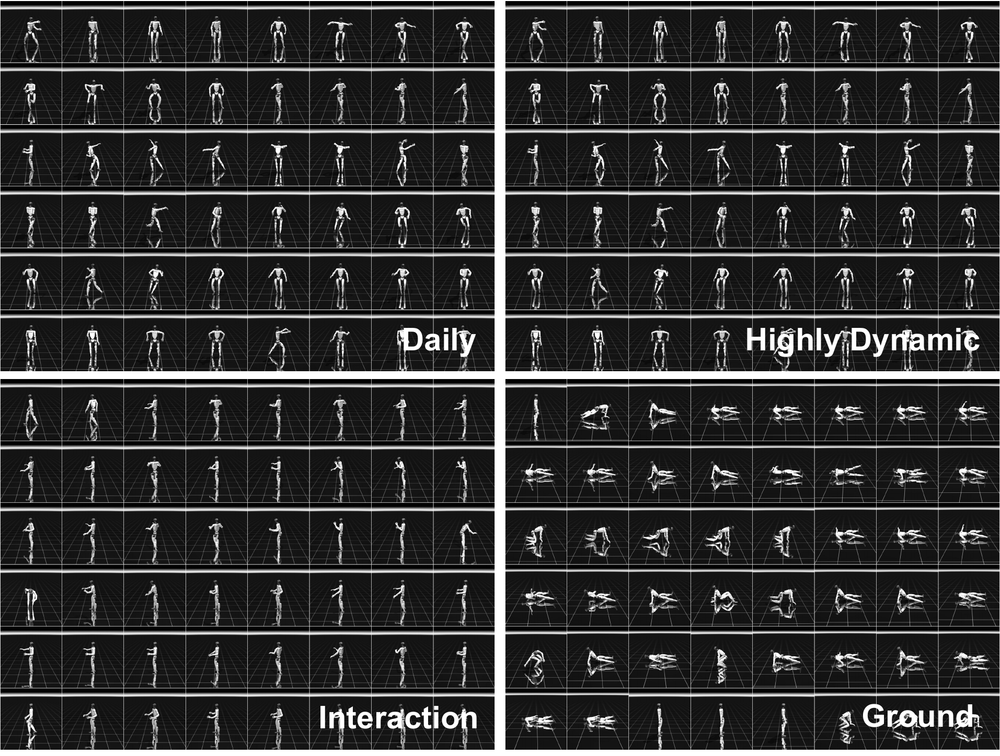

#4
GMT
HumanScore 5.70
MPJPE (rad) 0.158
Kinematic errors average frame-level pose differences, but often miss the physical artifacts that matter most in video: unstable support, foot skating, incorrect contact timing, and failed recoveries.
HumanTracker addresses both sides of evaluation. Its benchmark supplies broad, diagnostic motion coverage, while HumanScore learns trajectory-level quality from human preferences and predicts which rollout people prefer.

6,000 original pairs. Six expert annotators provide strict preferences, similar judgments, and cannot-compare judgments. Bilateral mirroring yields 12,000 preference records.
Five-second context. Each 250-frame window is encoded as a 539-dimensional frame-token sequence with explicit padding masks.
Readable output. Window rewards pass through a sigmoid and are averaged from 0 to 100, weighted by the number of actual frames.
Family-balanced alignment rate (%) on original, unmirrored strict-preference comparisons from the motion-disjoint test set.


Each grid synchronizes four zero-shot rollouts of the same reference motion. A failed rollout holds on its final frame while the remaining trackers continue.
Every clip includes a family label, a natural-language description, a fitted SMPL sequence, and a robot-space reference trajectory.

Steady locomotion, turning, and routine gestures reveal stability and residual drift.
Jumps, kicks, acrobatics, and fast footwork stress impact handling and phase timing.
Object and environment interactions require hand, arm, and whole-body coordination.
Low postures and multi-contact transitions test contact geometry, balance, and recovery.
It summarizes trajectory-level preference over contact, stability, smoothness, and reference fidelity. Higher is better within the same evaluation setting.
A rollout may look accurate before an early failure. Success prevents a short failed trajectory from being mistaken for robust tracking.
MPJPE and related errors remain useful for locating specific problems; HumanScore is not a replacement for every analytic diagnostic.
@misc{liu2026humantrackercomprehensivehumanalignedmotion,
title = {HumanTracker: Towards Comprehensive and Human-Aligned
Motion Tracking Benchmark},
author = {Dairu Liu and Zekun Qi and Jiayu Zeng and Ruixi Yu and
Yu Guan and Yintianrun Zhang and Xuchuan Chen and
Sikai Liang and Zekai Li and Chenghuai Lin and
Xinqiang Yu and Wenyao Zhang and He Wang and Li Yi},
year = {2026},
eprint = {2608.13555},
archivePrefix = {arXiv},
primaryClass = {cs.RO},
url = {https://arxiv.org/abs/2608.13555}
}